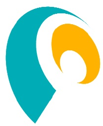
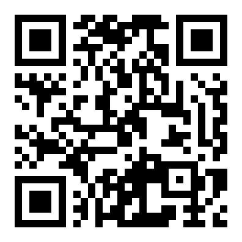

生成AIプログラミング体験 2026
AIに「注文」して
アプリを作ろう！
体験授業（30分）
筑波技術大学 産業技術学部 産業情報学科
教授 博士（情報科学） 白石 優旗
白石 優旗（しらいし ゆうき）
出身福岡県（県立鞍手高校 卒業）
経歴九州大学 博士（情報科学）→ 2013年から筑波技術大学（現在 教授）
専門人工知能（AI）／アクセシブル・テクノロジー／手話の認識・表記
研究室2年生から研究室に入れる「プレ卒研」制度あり
キーワード：「聴覚障害当事者（学生）」「情報保障」
「筑波技術大学 白石」で検索！
はじめに
- 注文文（プロンプト）は slido にあります
- 質問も slido へ。名前は書かなくてOK
- 保護者の方も、ご自身のスマホでご参加ください
- アンケートは、演習のあいまでOKです
本日の目標 — 大学の情報系は「楽しくて、深い」
1楽しい：AIに「注文」して、自分のアプリを作る
2深い：AI（LLM）のしくみを、さわって理解する
3大切：AIの便利さと限界を体感する ＝ AIリテラシー
去年やった人も、はじめての人も、今日は同じスタートです！
2025 → 2026
AIはこう変わった
🚀モデルを選べるようになった
Flash（速い）／Thinking（じっくり考える）／Pro（むずかしい問題）
🤖AIは「エージェント」へ
計画 → 実行 → 確認まで、AIが自分で進める時代に
🏫学校にもAI
学校でも生成AIが使えるようになってきています
今年のテーマ
AIに「注文」して、自分のミニアプリを作る！
① 注文する
→
② 動かす
→
③ 改造する
→
④ 共有する
- メニューから、作りたいものを選べます
- 同じAIでも、注文しだいで できるものが変わる
ステップ1
メニューから選んで、AIに注文しよう
🐹 A. もぐらたたき
定番アクション。まずはこれ！
🥠 B. おみくじ
いちばん かんたん
⚡ C. 反応速度
昨年のリベンジ
🚀 D. 自由×エージェント風
経験者むけ（あとで説明）
注文文の全文は slido に → 長押しでコピーしよう！
ステップ1
注文の例（A. もぐらたたき）
外部ライブラリなしの単一HTMLで、もぐらたたきゲームを作ってください。絵文字のモグラが9個の穴からランダムに顔を出し、タップすると1点。30秒間のスコアを競えるようにしてください
- この全文が slido に → 長押しでコピーして、Geminiに貼ろう
- B〜Dの全文も slido にあります
経験者はこれ！
「エージェント風」の注文
①「反応速度ゲームより面白いミニゲームの仕様を、3行で提案して」
②「その仕様を、外部ライブラリなしの単一HTMLで実装して」
AIに「計画 → 実装 → 改善」までさせるのが、2026年流！
この注文文も slido にあります
ステップ1
AIの画面をひらこう
やること
ブラウザで生成AIのページをひらき、入力欄に注文文を貼りつけるだけ。
モデルの選択は、そのままでOK
いちばん速いモデルで十分に動きます。
※ 当日の画面例は、授業内で投影します
ステップ2
うごかそう
基本：Geminiの画面の中で、そのまま動く！
生成されると「プレビュー（Canvas）」が出る → タップして遊べる。そのまま追加注文もOK
コードだけが出てきたら、AIにこう言ってみよう
この画面でそのまま遊べるようにして
それでもダメなら → もう一度おなじ注文／新しいチャットでやり直す／かんたんな B に切りかえる／先生を呼ぶ
ステップ3
AIに「追加注文」しよう
変えたいところ（差分）だけ お願いするのがコツ！
✨ キラキラモグラは2倍点
💣 爆弾をたたくと −5点
🎨 見た目をかっこよく
🕹️ 自分だけのルールを追加
AIの方から「こうしたら？」と提案してくることも。乗ってみよう！
直らないときは、一から作り直してもらう方が早いことも…🙏
【余裕があれば】
作品を共有しよう
1スクリーンショットを撮る（電源＋音量アップを同時押し）
2slido に貼る。作品の名前と工夫したところも書こう
3友だちの作品に 👍 しよう
できた人だけでOK。あとからでも大丈夫です
演習タイム
目標：一人1作品！（改造はボーナス）
メニュー（全文は slido）
🐹 A. もぐらたたき 🥠 B. おみくじ（かんたん） ⚡ C. 反応速度 🚀 D. 自由×エージェント風
コツ
✍️ 注文は「はっきり」「シンプルに」
💬 わからないことは、AIに聞こう（怒られない笑）
🌱 注文のことばは、練習で上手くなる
こまったら
💡 「この画面でそのまま遊べるようにして」と送る
🔁 もう一度注文／🆕 新しいチャット
🥠 かんたんなBに切りかえる
👥 となりの人と見せ合う／🙋 先生を呼ぶ
まとめ
① AIは速い — 数秒でアプリができる
② でも、ときどきウソをつく — だから人間が確かめる
③ 注文 → 確認 → 注文し直し — このくり返しで上達する
これが「AIリテラシー」の第一歩
この先
AIが、自分でくり返すようになる
今日、みんながやったこと
注文する → 動かす → 直す。このくり返しを、人が回していました
いま最先端 ＝ AIエージェント
計画 → 実行 → 確認 → 修正 まで、AIが自分で回す
AIから「こうしたら？」と提案された人、いませんか。あれが入り口です
人の仕事は「何を作りたいか」を決めること
大学の中身
今日さわったものの「本物」は、数学でできています
今日さわったもの
本物のAIでは
大学1年の必修
🗺️ ことばの地図
2次元の平面に並べた
数百〜数千次元
人間には描けない
線形代数学1
🎲 次の言葉ガチャ
確率は先生が手で決めた
数十億個の数字を
大量の文章から自動で調整
統計確率A
その「調整」のやり方
微分
どっちに動かせば良くなるか
解析学1
この3つは、1年生で ぜんぶ必修 です
✍️ そして、AIに伝える力＝国語。今日みんなが何度も書き直した、あれです
さっきの投票、おぼえていますか
「これもAI」を、作る・良くする研究
🤟 手話認識
カメラで手話を読み取る
✍️ 手話を「書く」
手話には書き言葉がない。その表記をつくる
👥 多者会話支援
何人も同時に話す場で、話についていけるように
🎧 音声認識の応用
文字起こしを、もっと使えるものに
ほかに XRアクセシビリティ／スポーツ支援／ロボット活用 など
情報保障を受けるだけではなく、提供する側になろう！
★ 白石の授業：機械学習・演習／LLMと生成AI／情報保障技術学・演習／情報保障システム工学・演習／特別研究
情報科学コース・情報保障工学領域、どちらからでも白石研究室に入れます
研究って、どこまで行けるの？
スタートの音が聞こえないなら、振動で
陸上の短距離走。合図は「ピストルの音」。聞こえない選手には 光（LED）
研究でわかったこと
振動（触覚）は、光より速く反応できて、音と同じくらい速い
→ 振動で知らせる装置「HaptStarter」を開発
2024年 国際学術誌に掲載
左＝光（LED）の合図 右＝指先の振動装置
タップで拡大
この研究をしていた先輩は…
筑波技術大学で 修士 → 筑波大学（落合陽一 研究室）で 博士 → いま 研究者
さいごに
AIは、あなたの「作りたい」をかなえる道具。
みなさんは、はじめからAIがある世代。
新しい使い方は、みなさんが見つけてください
AIを駆使して、皆さんが主役となる
アクセシブルな未来を、共に創りませんか？
「つづき」は筑波技術大学にて！！

https://www.shiraishi-lab.org/
「筑波技術大学 白石」で検索！
今日の教材は おうちのネットから 遊べます
yuhkis.github.io/taiken2026
予備（Geminiが使えない場合のみ）
Copilot で行う場合
流れは同じ！ slidoから注文文をコピー → 貼りつけ
1Copilot を開いてログイン
2slido から注文文をコピーして貼り付け
3生成されたHTMLコードをコピー
4プレビューが出たら、そのまま遊べる（出なければ先生を呼ぼう）
こまったら
うまくいかないときは
🔁もう一度お願いする（結果は毎回変わる）
🆕新しいチャットでやり直す
📋コピーはコード右上の📋アイコンで
🥠かんたんな B（おみくじ）に切りかえる
👥となりの人と見せ合う
🙋先生を呼ぼう（slidoに書いてもOK）